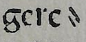

Hyphenation
Hyphens are transcribed according to the original. There can be several variants of the hyphen. How to transcribe a particular hyphen is regulated in the respective levels.
Level 1
The hyphenation is transcribed according to the original. The hyphen or hyphen-minus (-) is to be used as hyphen, regardless of its appearance in the text.
Level 2
The hyphenation is transcribed according to the original. No distinction is made between
hyphens and ⸗. Conditional hyphen or soft hyphen
is to be used as hyphen.
Level 3
Hyphenation is transcribed according to the original. A distinction is made between the hyphens
Overview
| Original | Level 1 | Level 2 | Level 3 |
|---|---|---|---|
 |
- HYPHEN-MINUS : hyphen or minus sign hex: D; | -SOFT HYPHEN [SHY] : discretionary hyphen hex: ­ | -SOFT HYPHEN [SHY] : discretionary hyphen hex: ­ |
 |
- HYPHEN-MINUS : hyphen or minus sign hex: D; | -SOFT HYPHEN [SHY] : discretionary hyphen hex: ­ | ⸗DOUBLE OBLIQUE HYPHEN hex: ⸗ |
|  | - HYPHEN-MINUS : hyphen or minus sign hex: D; | -SOFT HYPHEN [SHY] : discretionary hyphen hex: ­ | ⸗DOUBLE OBLIQUE HYPHEN hex: ⸗ |
| - HYPHEN-MINUS : hyphen or minus sign hex: D; | ⹀DOUBLE HYPHEN hex: ⹀ | ⹀DOUBLE HYPHEN hex: ⹀ |